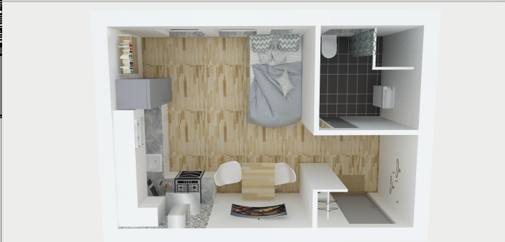
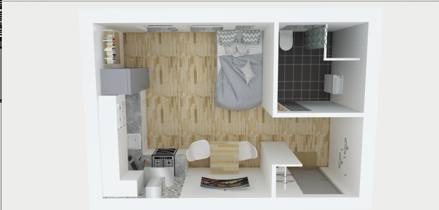

Den första storleken är en enrumslägenhet för 1- 2 personer. Lägenheten har måtten 4.6 m gånger 6.6 m. Boarean är 24 kvm då ytterväggarna är 0.3 meter breda.
Hallen är det första man kliver in i lägenheterna. Den visar färgtemat som lägenhetrna har. Vitt och fräsht med inslag av naturliga trä-material på golv och lister och gråa nyanser på dörrar, fönsterbläck och i köket. Alla lägenheternas hallar har förvaring på något sätt. Enrumslägenheten har en garderob och krokar på väggen.
Av uppenbara skäl har inte enrumslägeheten ett riktigt sovrum. Dock har den blivit försedd med en så kallad “sovhörna”. Det är ett utrymme på 2.0 meter gånger 1.8 meter där det är tänkt att en 1.2 meter bred säng ska få plats. Från toalettväggen är en 1.2 meter bred och 1.5 meter hög vägg placerad för att skapa illusionen av ett sovrum.
Badrummen i lägenehterna är helkaklade för att de ska vara enkla att städa. Golvet är grå/svart och väggarna är vita. Dörren in till badrummen är en skjutdörr för att ta så lite plats som möjligt. Badrummen har handfat med kommod undertill för att ge mer förvaring.
Båda storlekarna har kompletta kök. Köken har ugn, spis, kombinerad kyl/frys, micro och till och med diskmaskin. Förvaringsmöjligheterna är stora och då det både finns överskåp, underskåp och lådor. Överskåpen använder sig av en såkallad push to open teknik för att göra utseendet på köket lite renare, då det saknar handtag. Färgerna i köket matchar resten av lägenheten. Skåp och luckor i en matt vit kulör, grått kakel i marcokantskt mönster och en grå tålig sten bänkskiva som är lätt att torka av.
 


Eftersom enrummaren kan bli specialanpassad måste det även justeringar göras på badrummet. Istället för att ha måtten 1.8 meter gånger 2.0 meter flyttas väggarna i badrummet ut på båda hållen så att det blir 2.2 meter gånger 2.2 meter stort. Handfatet ersätts till ett större som är höj och sänkbart och kommoden byts ut mot ett väggskåp på väggen ovanför handfatet. Duschplatsen blir större 1.4 meter gånger 1.4 meter och kakelväggen försvinner. Ett skena sätts upp i taket och ett draperi fästs i den som stänkskydd mot vattnet. Toaletten flyttas ut från väggen med 10 centimeter och specialhandtag sätts upp på sidorna. Dock saknas garderoben i den specialanpassade lägenheten för att ge mer svängrum. Badrumsväggen är dessutom flyttad 200 millimeter längre in mot ytterdörren för att den ska kunna bli klassad specialanpassad.